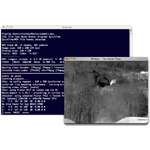

Discover MPlayer OSX
User Friendly interface |
|
|
You can open movies by just doublecklicking on the icon, or you can drag the movie file onto the MPlayer interface, and just simply drop it...and your movie will start playing automatically MPlayer OSX also sports a very nice playlist manager, where movies can be added using simple drag and drop. To show or hide the playlist, just click on the PL button, located in the lower right corner of the MPlayer OSX interface. |
|
Customize to meet your need |
|
 |
|
Unleash the power of mplayer |
|
|  |
The command line version of MPlayer lets you specify numerous options that control multimedia content playback, such as selecting different video / audio output drivers, setting postprocessing to values that suit your need, or rebuild a broken index on a movie. All this, and much, much more is at the tip of your fingers. |